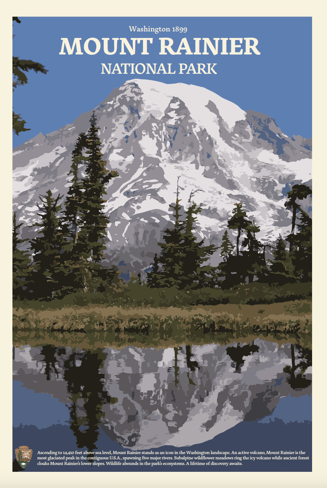
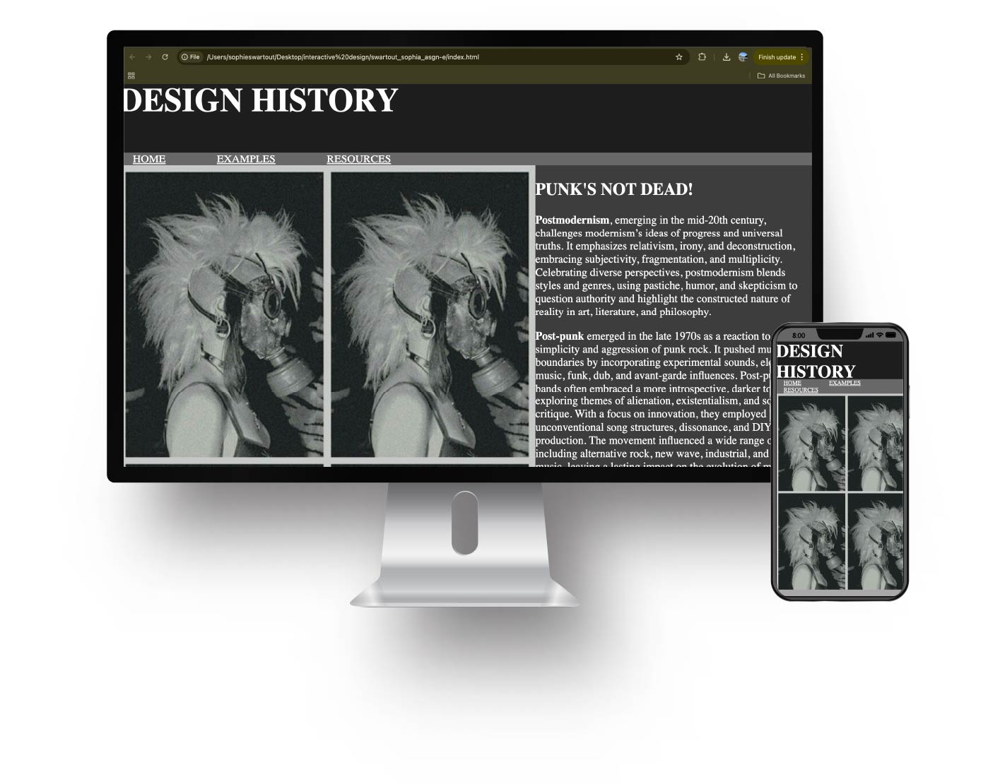

I am a graphic design student, currently in my sophomore year at Oregon State University.
My whole life I have been an art student. I have taken art classes at every school I've been in. Coming to college, I decided to try something new to me and get into digital art and graphic design. Over the past year, I have been working on my technical skills in digital art and Adobe Suite. Featured below are a few examples of the work I have produced in my classes.


This is from my most recent project. Our assignment was to highlight an important aspect of Postmodernism. Postmodernism affects everything from literature to philosophy to architecture, even music. I chose to focus on post-punk musicians and the design of their posters. The bands I referenced are Siouxsie and the Banshees, Riot Grrrl, Joy Division, and Baushaus. This website gives a short history of each band and their impacts on the post-punk movement aswell as an example of their posters.